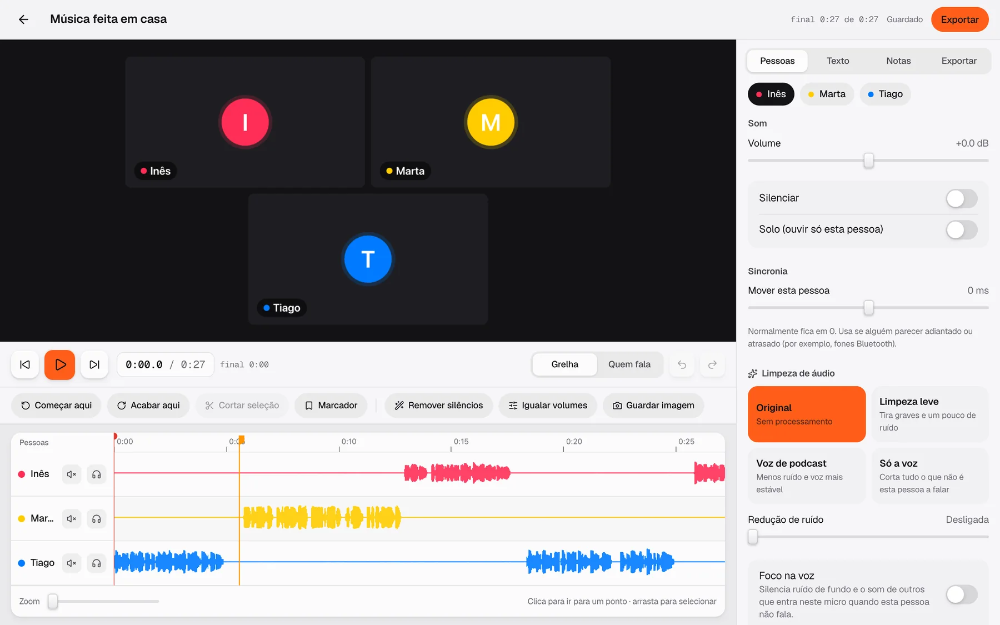

case study · web, android · 2026
Every voice, recorded where it is.
Podcast Helper is a remote podcast studio. A bad connection can spoil the call, but never the recording.

Remote recordings usually sound like the call.
Most tools record the conversation as it travelled through the internet, dropouts included. Podcast Helper records each person locally at full quality and only uses the call so people can hear each other.
Supabase is used only to find each other in the room. Audio, video and the final files move directly between devices.
Three voices, three devices, one take.
Talk on a call
Guests join from a link and talk peer to peer, with no account to create.
Record on each device
Every microphone records WAV at 48 kHz and every camera up to 4K, on its own device.
Line up to one clock
The host keeps a reference clock, so the separate tracks fall into place.
Everyone gets everything
When the take ends, files travel peer to peer, so everyone leaves with every track.

Lessons from building it
Presence is not a heartbeat
Realtime presence has a rate limit that closes the channel, so live state travels as ordinary messages instead.
Polite and impolite peers
Two offers crossing each other closed the data channels, so only one side of each pair makes the first offer.
An Android app without a store update
The Capacitor app loads the live site, so every web release reaches Android at once, with the screen kept awake while recording.
next project
 Lunar
Lunar